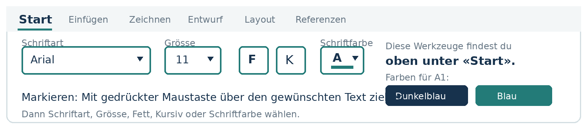
01 · GRUNDLAGEN
Erste Schritte in Word
Beginne bei A1. Arbeite danach in der Reihenfolge weiter.
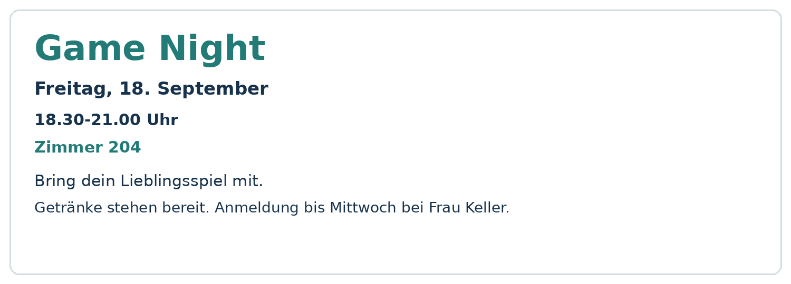
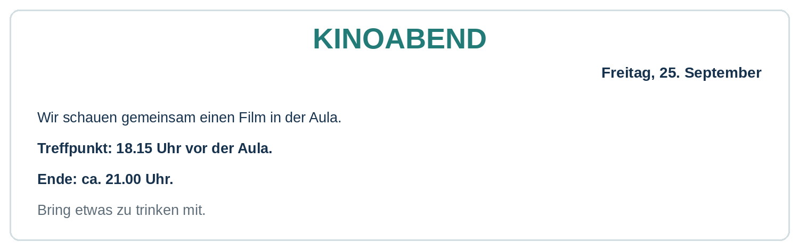
A3
Absätze und Ordnung
Texte mit Abständen und Ausrichtung lesbar gestalten.
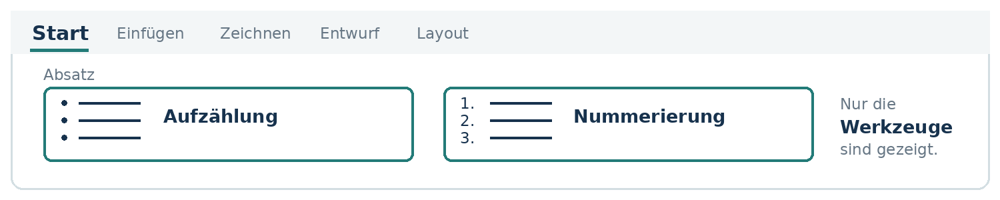
A4
Listen und Nummerierungen
Dinge als Liste und Abläufe mit Zahlen darstellen.
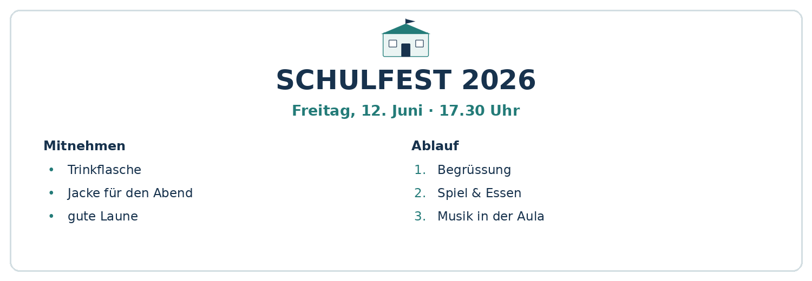
A5
Rette das Chaos-Dokument
Ein durcheinandergeratenes Dokument reparieren.
02 · DOKUMENTE
Dokumente aufbauen
Mit Seiten, Bildern, Tabellen und Überschriften arbeiten.
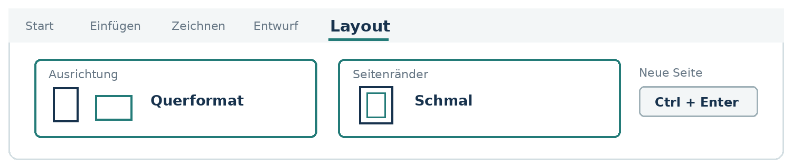
A6
Seitenlayout
Seitenränder, Hoch- und Querformat sowie Seitenumbruch.
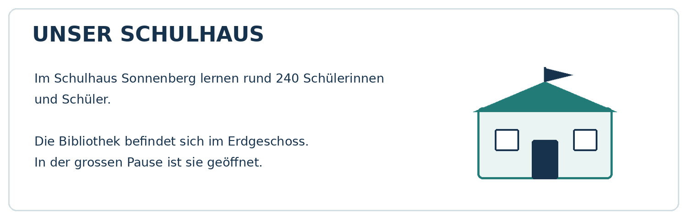
A7
Bilder in Word
Ein Bild einfügen, zuschneiden und neben Text platzieren.

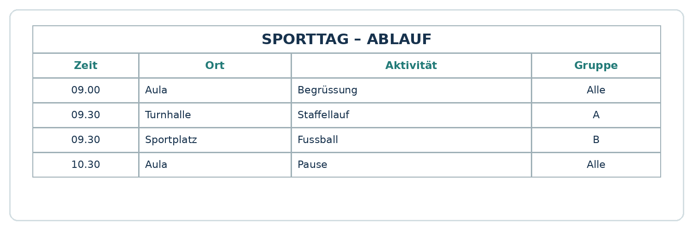
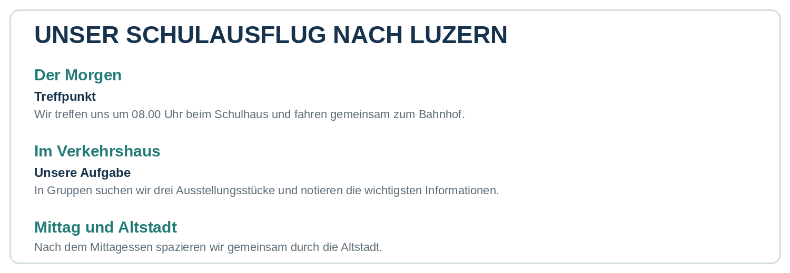
A9
Formatvorlagen
Titel und Überschriften mit Word-Formatvorlagen kennzeichnen.
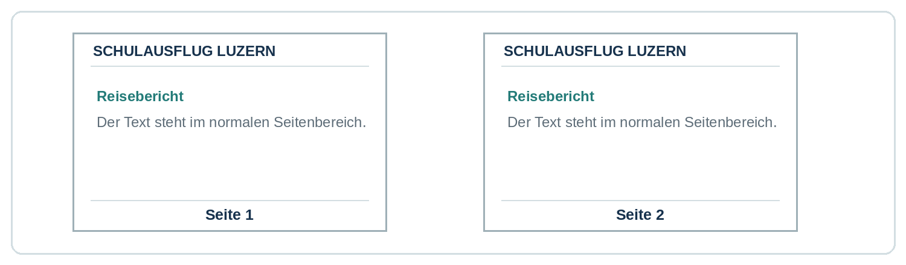
A10
Kopfzeile und Seitenzahlen
Wiederholte Kopf- und Fusszeilen und echte Seitenzahlen.
03 · SELBSTSTÄNDIG
Jetzt kannst du es selbst
Bekannte Werkzeuge kombinieren und eigene Entscheidungen treffen.
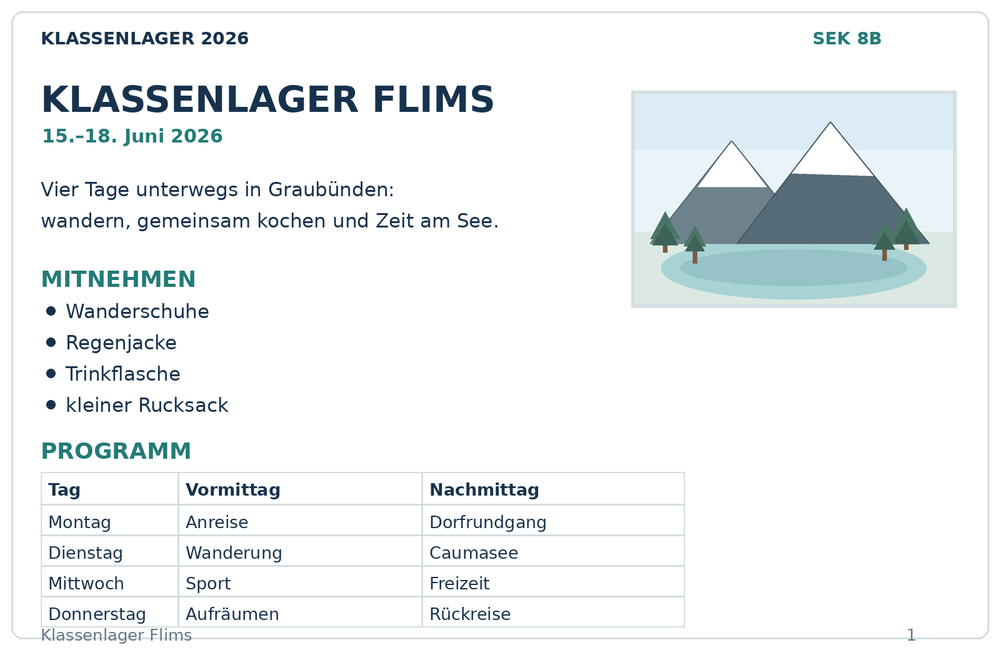
A11
Dokument nachbauen
Ein Klassenlager-Infoblatt nach einer Vorlage gestalten.
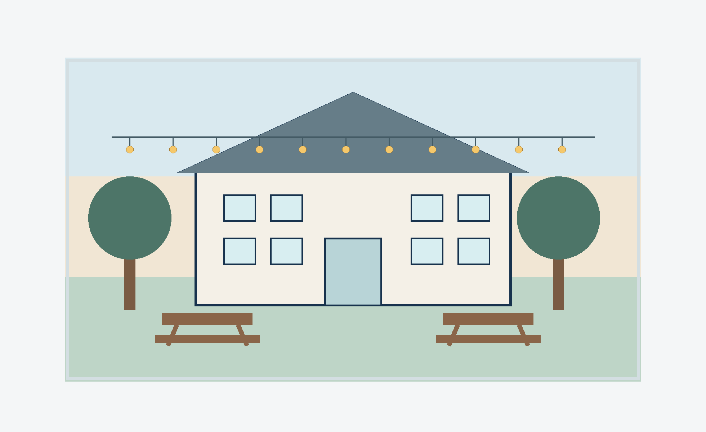
A12
Selbst gestalten
Einen eigenen Flyer erstellen – ohne genaue Zielvorlage.
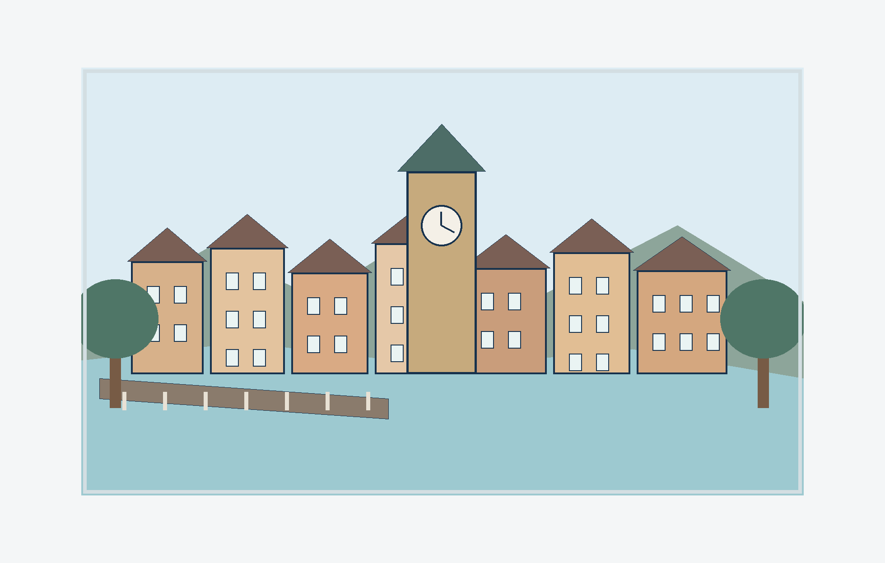
A13
Gesamtauftrag
Ein zweiseitiges Dokument zur Projektwoche Bern gestalten.
FREIWILLIG
Zusatzaufgaben
Nur wenn du mit deiner Hauptaufgabe fertig bist oder die Lehrperson es sagt.
FORMELLER BRIEFAbsender · EmpfängerOrt, DatumBetreffFreundliche Grüsse
PLUS 1
Schnupperlehrbrief
Einen formellen Brief erstellen und als PDF speichern.
LINKS & QUELLENLesbarer Linktext ↗Das habe ich herausgefunden: …Quelle: Anbieter · Seitentitel · Datum
PLUS 2
Links und Quellen
Echte Links setzen und eine Information mit Quelle belegen.